User Interface
-
Main Tab
Users can set paths for all required tools and databases.
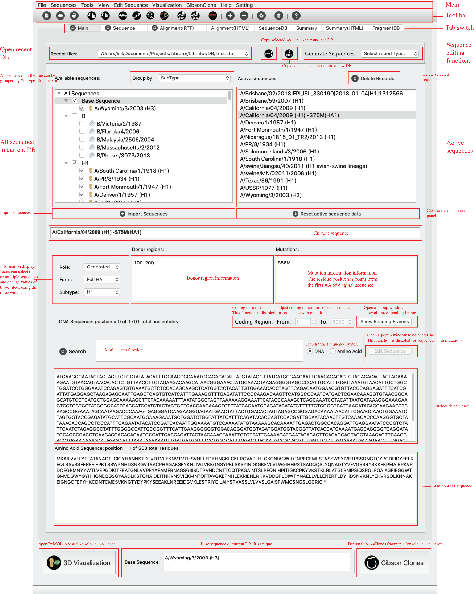 -
Sequence Tab
Users can set paths for all required tools and databases.
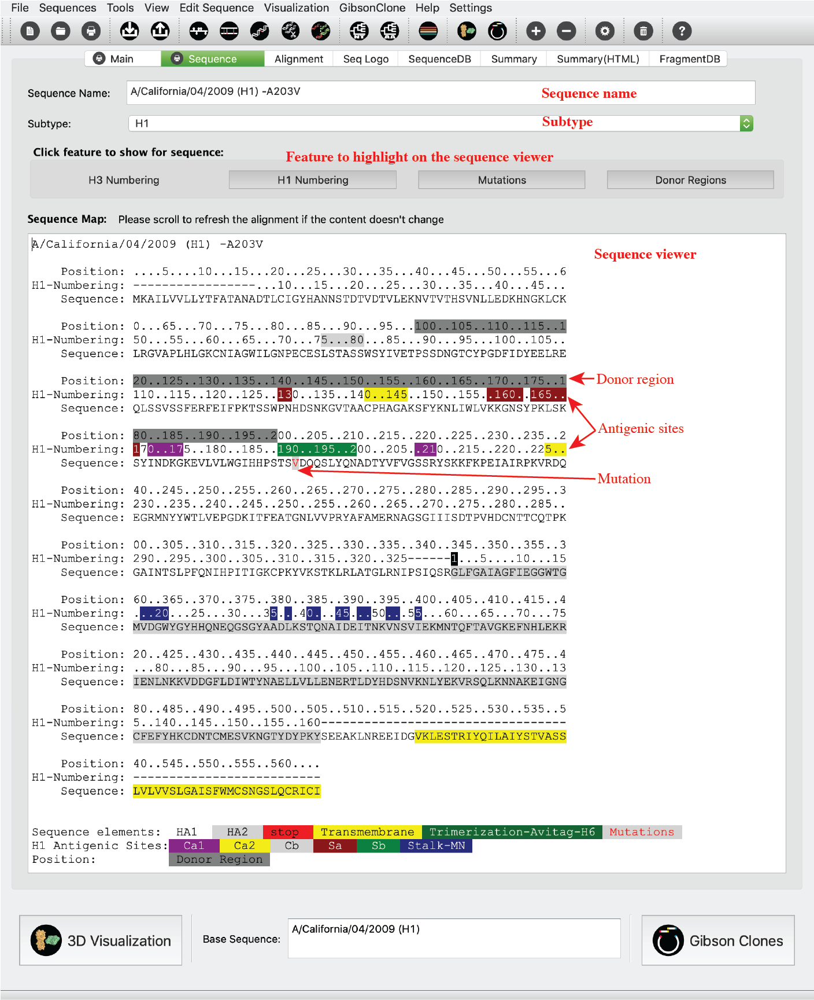 -
Alignment RTF Tab
Users can set paths for all required tools and databases.
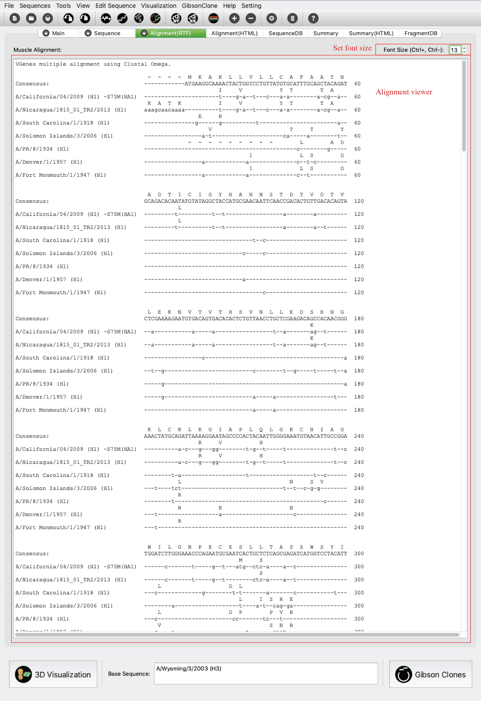 -
Alignment Tab (HTML)
Users can set paths for all required tools and databases.
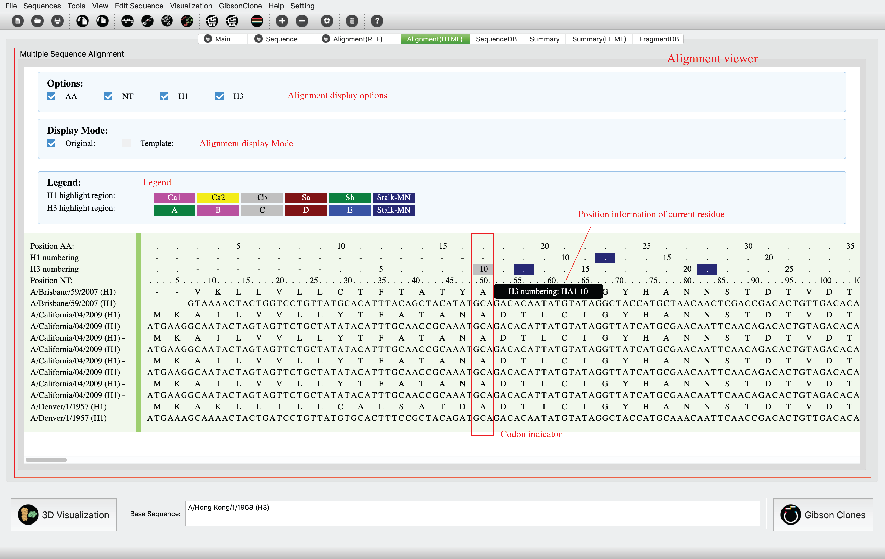 -
Sequence DB Tab
Users can set paths for all required tools and databases.
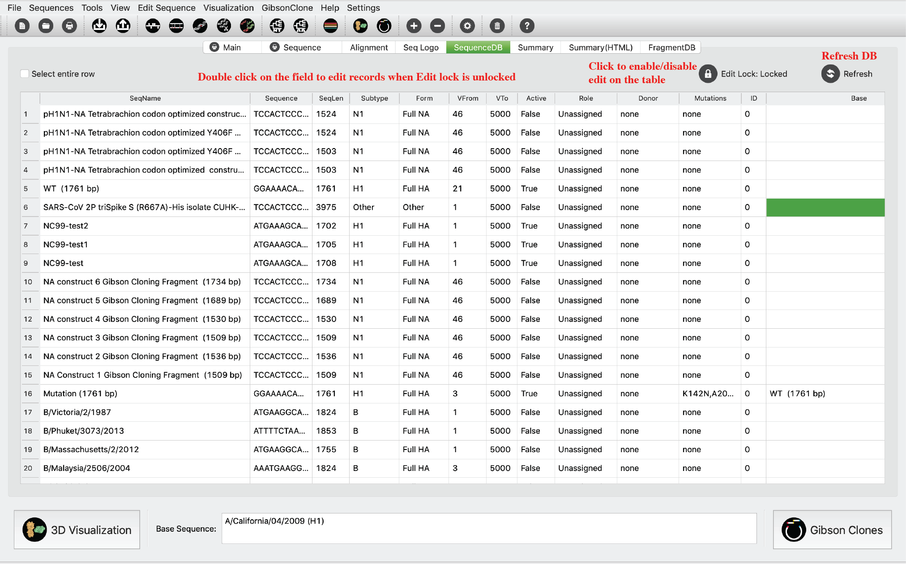 -
Summary Tab
Users can set paths for all required tools and databases.

-
Summary Tab (HTML)
Users can set paths for all required tools and databases.

-
Fragment DB Tab
Users can set paths for all required tools and databases.
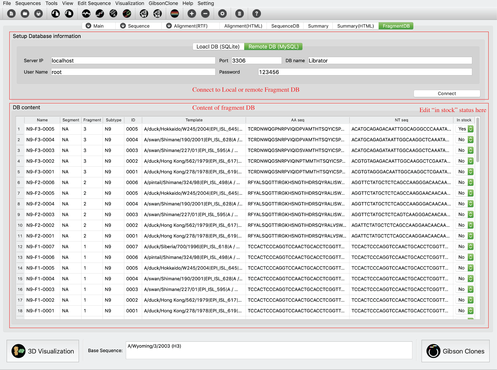
Functions
Basic functions
-
Path setting
Users can set paths for all required tools and databases. Click Setting-> Preferences in menu

-
Create new sequence database
Users can create new sequence database. Click File-> New in menu
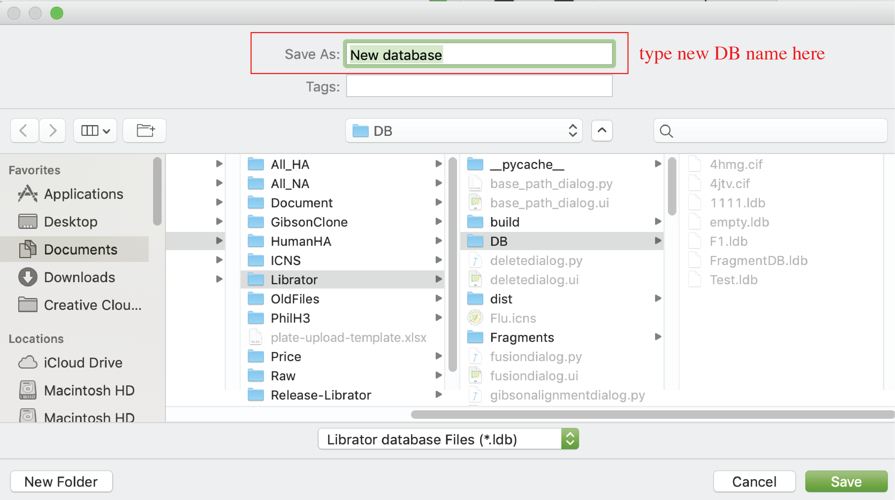 -
Open existing sequence database
Users can create new sequence database. Click File-> Open in menu

-
Import sequences
After load an existing sequence database, users can import sequence into current database. The input files should be in FASTA format. Click Sequences-> Import in menu

-
Export sequences
After load an existing sequence database, users can import sequence into current database. Selected sequences will be exported to a FASTA file. Click Sequences-> Export in menu
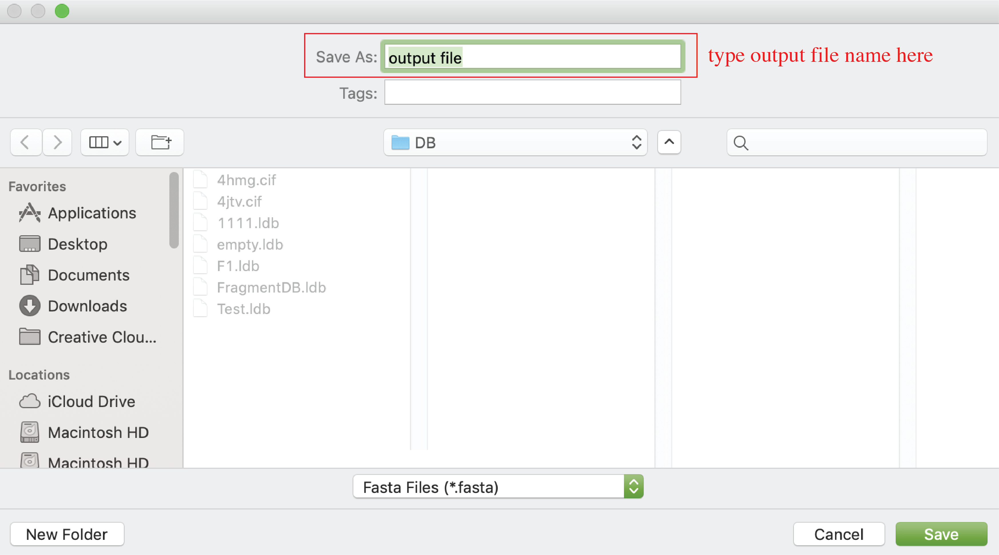
Advanced functions
-
Edit information of sequences (on Main tab)
Users can edit information (sequence name, Role, Form, Subtype, NT sequence, reading frame, donor regions) of sequences on main tab.
For Sequence name, users can click sequence name text input to edit it.

For Role, Form, and Subtype, users can edit by the left panel. Users can select multiple sequences in active sequence panel to do bulk update.

For reading frame start and end, users can use the “Coding region” inputs. For NT sequences, users can click “edit sequence” button to edit sequences.

Note: coding region and NT sequence editing is disabled for sequences with mutation information. For donor regions information, users can click “Donor region” input to update information.
-
HA numbering
Users can access H1/H3 numbering of selected sequence. Click Tools-> HA Numbering in menu or just click “Sequence” tab
-
Multiple sequence alignment
Users can align multiple sequences together and check the results in a graphical viewer. Click Tools-> Multiple Alignment(HTML) in menu. There are two display modes: original sequence mode and template mode. In template mode, users can choose any sequence (including consensus sequence) as template to only highlight sequence difference.

-
Generate phylogenetic tree (ML tree)
Users can generate phylogenetic tree (Maximum Likelihood tree) for selected sequences. Nucleotide and Amino Acid trees are available. For Nucleotide tree: Click Tools-> Generate Maximum Likelihood Tree (nucleotide) in menu; For Amino acid tree: Click Tools-> Generate Maximum Likelihood Tree (Amino Acid) in menu.
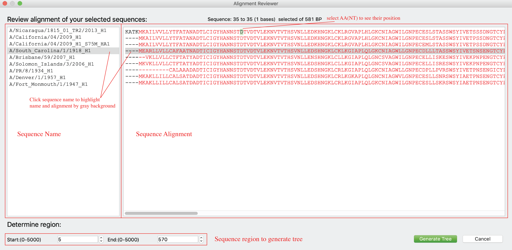 -
Mutate sequence
Users can generated new sequences with mutations based on any existing sequence. Click Edit Sequence-> Mutation in menu. As shown below, users can generate mutations on a template sequence using either original position (count from first amino acid, panel A) or H1/H3 numbering (H1 numbering for group1 virus and H3 numbering for group2 virus, panel B). H1/H3 numbering function is only enabled for HA sequences of FLU A. Users are allowed to input multiple mutations at the same time, and are allowed to decide from two options: 1) generate one sequence with all mutations; 2) generate multiple sequences, each of them with a single mutation. After the mutated sequence was generated, users can visualize the 3D structure (only enabled for HA now) of generated HA protein (panel C).
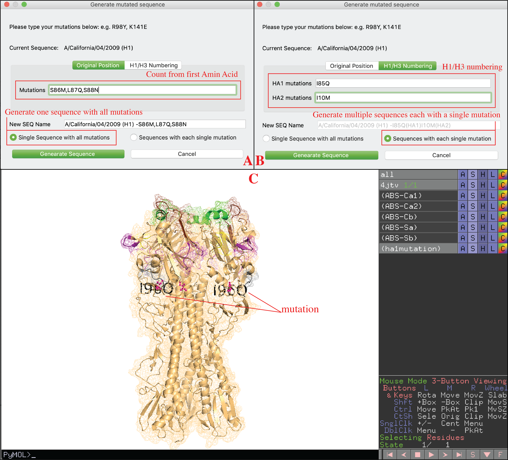 -
Compare sequences and generate screening mutations
Users can compare sequences and generate consensus sequences (Base biased) or new sequences with screening mutations (Cocktail). Click Edit Sequence-> Editing in menu. Cocktail mode (A): Compare base sequence to another sequence, identify all mutations between two sequences on donor region of donor sequence (user can setup donor region on this interface), then generate new sequences with those mutations using base sequence as template. Users can choose to only generate sequences with single mutations or all combinations of mutations. Base biased mode (B): Generate consensus sequences of base sequence and selected sequences. For each donor sequence, only their donor region will be considered (full sequence will be considered when donor region is none).

-
Epitope transplant across different subtypes
Users can transplant epitopes/regions from sequences of different subtypes. Regions being removed from base sequence and that being inserted from donor sequence are not necessary to have same length. Users can add multiple replacements on one sequence (click ‘Add’). Those replacements could be from different sequences. Users can review the replacement design in the bottom window. Users can double click replacement to delete it. Users also can click ‘Clear’ button to rest current design. Click Edit Sequence-> Fusion in menu. This window has two layouts: high resolution layout and low resolution layout. Liberator will automatically choose the best fit based on current display resolution. Users also can click Edit Sequence-> Fusion (high resolution) or Edit Sequence-> Fusion (low resolution) to determine the layouts they prefer (As shown below).
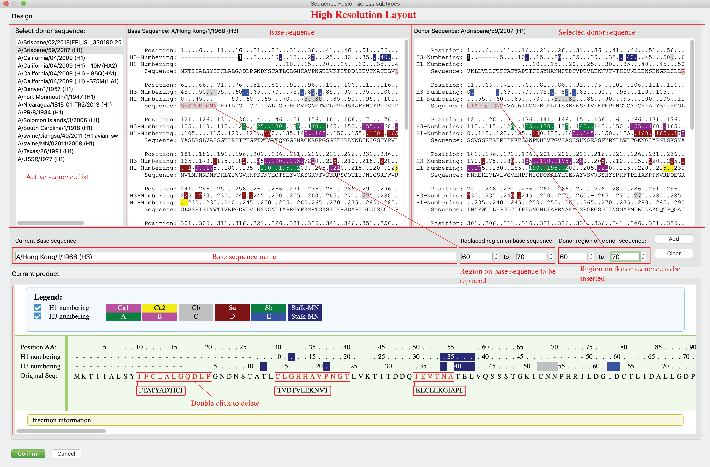
-
3D visualization via PyMOL
Users can see 3D structure of selected sequence via PyMOL (only for HA). Click Visualization-> PyMOL in menu.

-
Generate Gibson Clone fragments
Users can generate Gibson Clone Fragments. Users can select sequences, determine fragment DB, output path, and joint region plan (panel A), after click “Generate Fragments” button, a dialog will pop up for users to review and confirm (panel B). On panel B, users can review the generated Fragments (both amino acid sequences and nucleotide sequences), joint regions that shared by neighbor fragments are highlighted. Joint region that connect fragment 1 and 4 to the vector not displayed for AA sequences but can be found in NT sequences. ‘-’ in AA alignments indicate incomplete sequences or deletions and will be deleted in NT fragments. Users can click “confirm” button to generate fragments after they confirmed current fragments. After a few second, a notice will be popped up with summarized results (panel C).